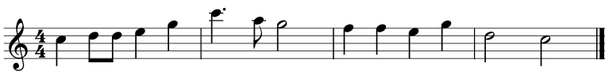

Musikk er lyd satt i system, og det mest grunnleggende i dette systemet er rytmer og noteverdier.
Vi tar utgangspunkt i notebildet vi viste i starten.

Den første noten du ser, den svarte prikken med hale helt til venstre, er en fjerdedelsnote.
Til høyre for den ser du to svarte prikker som har halene sine bundet sammen. Disse kalles åttendelsnoter.
Åttendelsnoter trenger ikke å være bundet sammen. Om en åttendelsnote står alene får den en hale som bøyer på seg, som her i eksempelet vårt:
Helt til slutt ser du to halvnoter. Disse ser ut som fjerdedeler, men i stedet for en svart prikk er den nå gjennomsiktig.